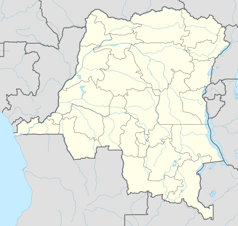

HISTORY OF: Christmas Massacres
|  | Combatants of the rebel Lord's Resistance Army (LRA) brutally massacred at least 620 civilians and abducted more than 160 children between December 24 and January 13 in northern Democratic Republic of Congo, said Human Rights Watch and Justice Plus, a Congolese human rights organization. Many of the victims were killed or abducted in three simultaneous attacks on December 24 and 25, 2008. |
In a two-week mission to the region, Human Rights Watch and Justice Plus researchers collected detailed information, including lists of persons killed or abducted in and around Doruma, Faradje and Duru, in Haute Uele territory. At several sites where the killings took place, researchers found fresh graves, pools of dried blood, cords used to tie up prisoners and blood-stained bats and axes used to kill the victims. "The LRA went in intending to kill and they left few survivors," said Anneke Van Woudenberg, senior researcher at Human Rights Watch. "The similar tactics and the near-simultaneous attacks indicate this was a planned operation meant to slaughter and terrorize as many civilians as possible." The LRA attacks followed the beginning of a joint military operation on December 14, led by the Ugandan army with support from the Congolese, Southern Sudanese, and Central African Republic armies. The Ugandan army attacked the LRA headquarters in Congo's Garamba National Park, near the border with Sudan. |